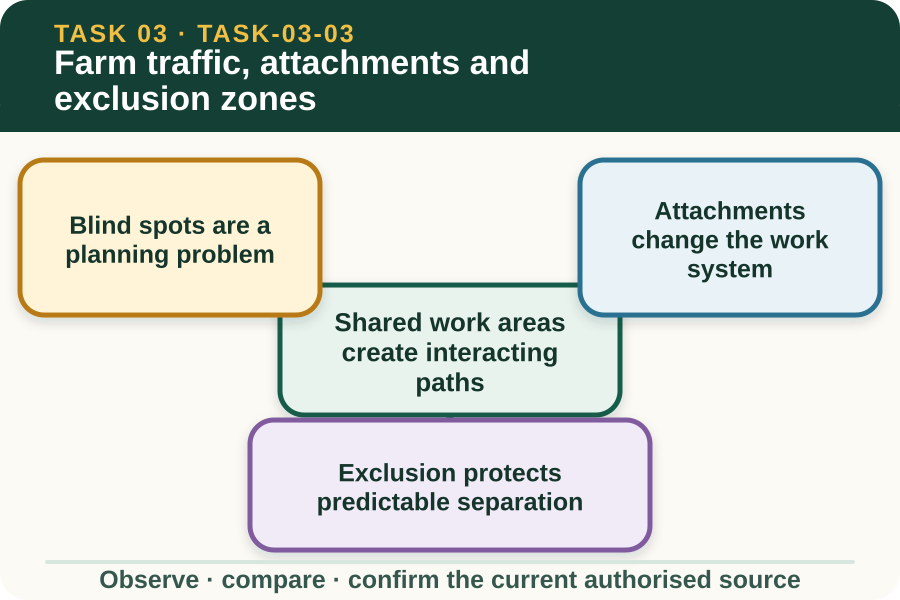

Learning purpose
Reason about people, vehicles, attachments, blind spots and shared work areas without giving operating instructions.
Task 3 · Lesson 3 of 4
Reason about people, vehicles, attachments, blind spots and shared work areas without giving operating instructions.
Learning purpose
Reason about people, vehicles, attachments, blind spots and shared work areas without giving operating instructions.
Success criteria
Learning boundary
Supplementary learning and formative practice only. Current RTO assessment, local procedures and authorised supervision control real work.

Farm traffic risk grows when people, tractors, other vehicles, livestock and deliveries need the same space. A route map should show where paths cross, where visibility may be limited and which activities can change unexpectedly.
This lesson supports exclusion and communication decisions within the current local traffic plan. It does not describe how to steer, manoeuvre, reverse or position a tractor.
A person outside a machine may assume they are visible, while the operator may not be able to confirm their position. Noise and distance can also weaken verbal communication.
The workplace traffic plan, designated routes and exclusion controls manage this uncertainty. Learners must not invent signals, approach a machine or enter a zone unless the current local procedure and supervisor explicitly authorise it.
Attached equipment can change dimensions, visibility, movement, stability, task capacity and the space required around the machine. The relevant manufacturer information and authorised work plan must match the exact combination.
Recognising that the system has changed is different from learning how to attach, adjust or operate it. Any connection, setting, load or operating decision remains with trained and authorised people following the current sources.
An exclusion zone separates people or other activities from a hazard according to the authorised workplace plan. Its value depends on the boundary being understood, visible where required and kept current as work moves or conditions change.
A learner observes whether people, gates, deliveries or livestock could compromise the planned separation. If the boundary is unclear or another activity enters the area, report the mismatch rather than personally directing machine movement.
Fictional worked example
Observed evidence: A fictional delivery arrives earlier than planned and its route crosses a marked tractor work area. Decision and reason: Two authorised activities now have overlapping paths, so the original separation cannot be assumed effective. Safe action: The learner stays outside the area and reports the timing and route conflict to the supervisor. Result: The supervisor coordinates a revised traffic arrangement through the workplace plan. Next check or record: The learner confirms the communicated change and notes the reason for the delay, without giving movement directions.
Farm traffic communication may use signs, barriers, radios, spotters, meetings or scheduled access, depending on the workplace. Each method has limits and only works when roles and meanings are agreed.
Do not invent gestures or rely on eye contact as proof that a message was received. The current traffic and communication plan defines who communicates with whom and how confirmation occurs.
A useful traffic note records the planned separation, observed conflict, time, location, people notified and confirmed outcome. It avoids unsupported statements about what an operator could see or intended to do.
These records support review of schedules, routes and current controls. They do not demonstrate tractor-operation competence or replace the RTO's controlled observation and assessment documents.
Formative practice
Each option explains the consequence. These answers save only on this device.
Written application
Apply and keep a learning record
Mark path crossings, possible blind areas and one changed activity on a fictional map. Write a supervisor referral. Do not design hand signals or instruct any machine movement.
Learning record: A supplementary-learning traffic conflict map with a concise authorised-decision brief.
Lesson responses and the activity are formative learning only. Formal sufficiency and competence remain with the current RTO process.
Source basis: AHCMOM202 Release 1 requirements to recognise risk to self and others and match attached equipment to authorised limits, supported by SafeWork NSW machinery and farm-traffic risk principles. Local traffic and operating procedures control all movements.